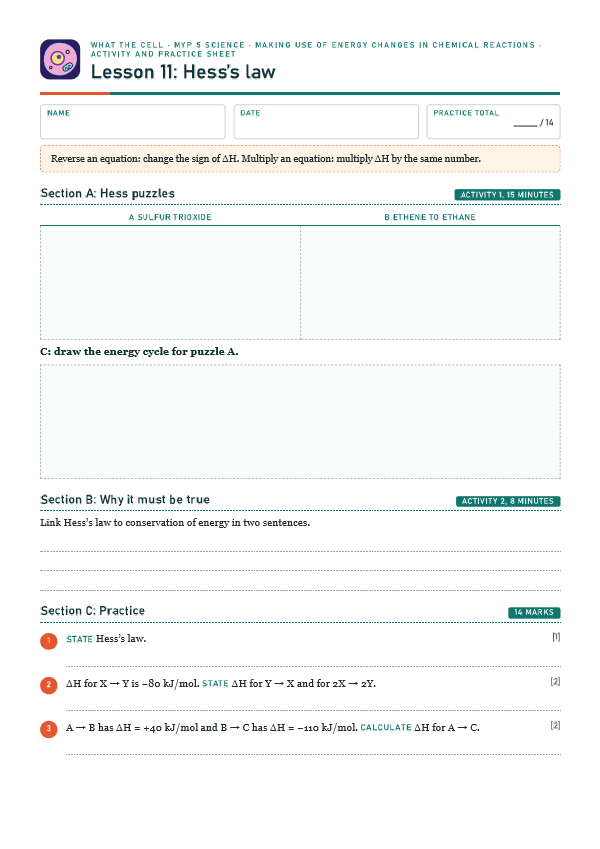

By the end of the lesson you can
- State Hess’s law
- Draw a simple energy cycle
- Use given equations to calculate an unknown ΔH
- Explain why Hess’s law follows from conservation of energy
Keys: arrows or a presentation clicker move the slides, F for full screen. Slides with a red dot have a video or simulation.
Videos (all 5 minutes or less)
- 4:58
Hess’s law and heats of formation
Professor Dave Explains. Hess’s law, reversing and multiplying equations; the first three minutes cover MYP. Slide 11.
Simulations
- Lab
Energy Changes Lab: Hess’s law
What the Cell. Five puzzles: choose how to use each equation and watch them add up and cancel.
Print and practise

Activity and practice sheet
Used in the lesson’s activities, with practice questions. Your teacher has the answers.
Download (PDF)Lesson 11 slides
All 22 slides in one file, to read again or print. The video buttons on the slides open YouTube.
Download the slides (PDF)Revising? The Revision tab on the unit page has the unit notes and review.
Notes: Hess’s law
Hess’s law
The total energy change of a reaction is the same whichever route is taken, as long as the start and the end are the same. Germain Hess published the idea in 1840.
Why it works
If two routes gave different energy changes, going round a loop would create energy from nothing. Energy cannot be created or destroyed, so every route must give the same total.
Energy cycles
Draw the reactants, the products and an intermediate. The direct arrow equals the sum of the arrows on the other route: ΔH1 = ΔH2 + ΔH3.
The rules
Reverse an equation: change the sign of ΔH. Multiply an equation: multiply ΔH by the same number. Add equations and cancel anything that appears on both sides.
Carbon monoxide
C + O2 → CO2 (−393) and CO + half O2 → CO2 (−283). Reverse the second and add: ΔH for C + half O2 → CO = −393 + 283 = −110 kJ/mol.
Why it is useful
Some reactions cannot be measured directly: carbon always burns partly to CO2; carbon and hydrogen will not react to make methane in a calorimeter; graphite turns into diamond far too slowly.
Key words
| Hess’s law | the total ΔH is the same by any route between the same start and end |
|---|---|
| energy cycle | a diagram showing two routes from reactants to products |
| conservation of energy | energy cannot be made or destroyed, only transferred |
| reverse | swap reactants and products; change the sign of ΔH |
| enthalpy change (ΔH) | the energy given out or taken in by a reaction, in kJ/mol |